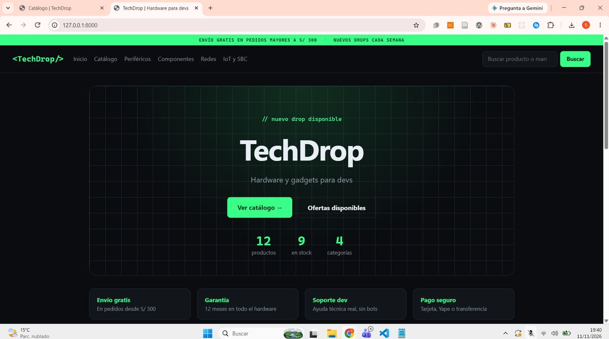
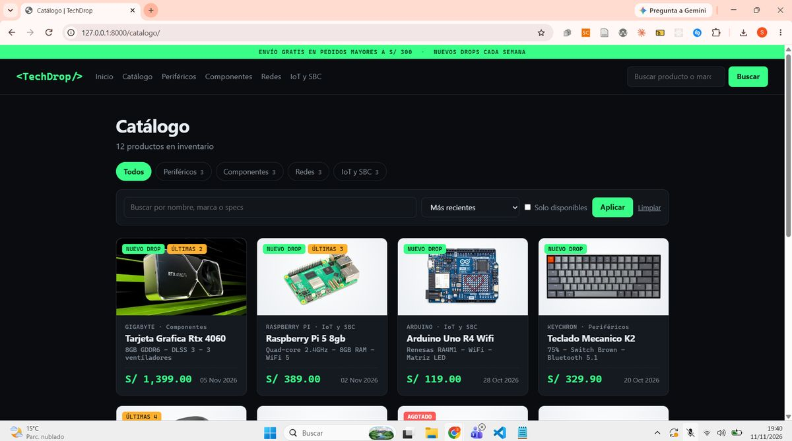
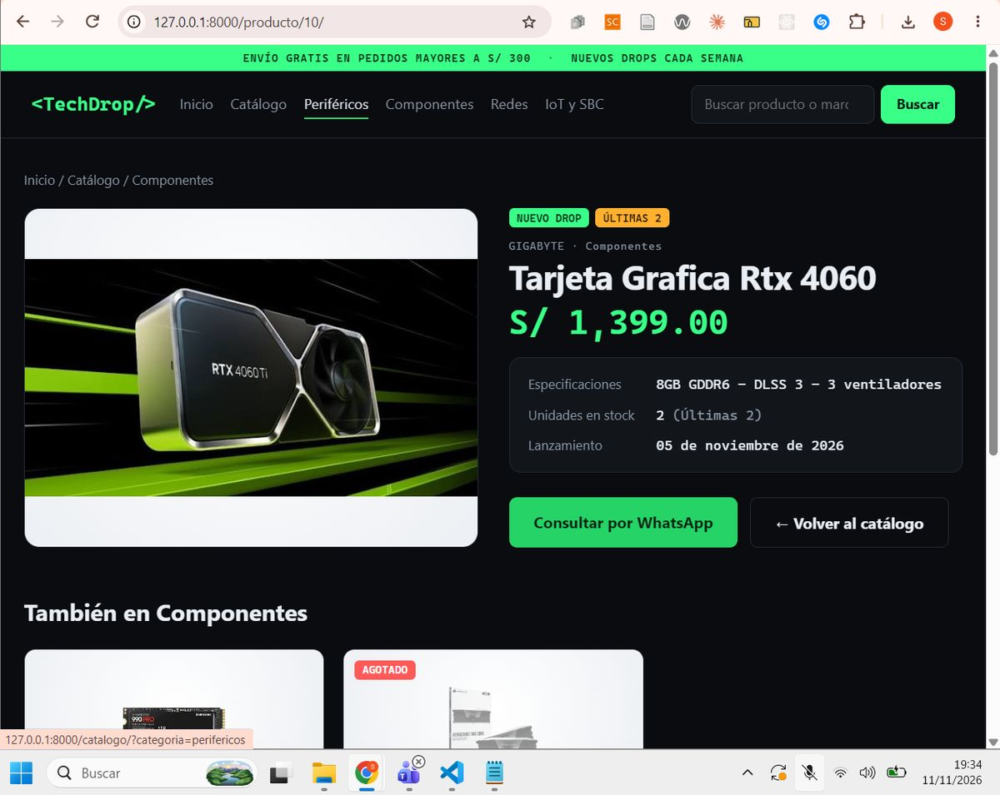
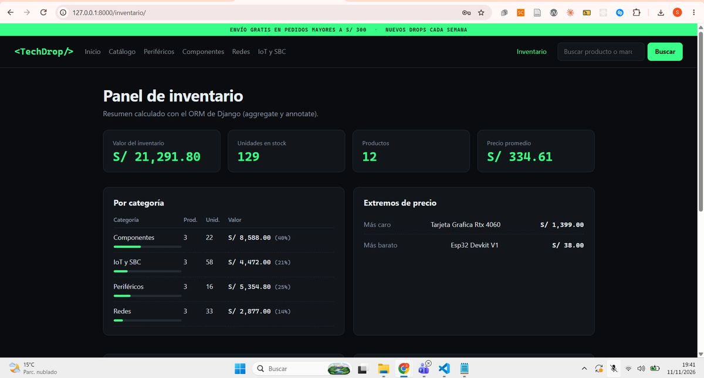

TechDrop
Catálogo e inventario de hardware y gadgets para desarrolladores, hecho con Django, SQLite y el patrón MTV.
Ver código en GitHub Ver capturasEsta página es estática (GitHub Pages no ejecuta Python). La aplicación Django corre en local con
python manage.py runserver; aquí se muestran capturas de su funcionamiento.Qué incluye
Rutas
include() y name en cada ruta; solo {% url %} en plantillas.VistasFBV
home y CBV con ListView, DetailView y get_context_data().PlantillasHerencia con
base.html, bloques, for, if, filtros y tags propios.Modelo y ORM
Producto, migraciones, QuerySet propio, aggregate y annotate.InventarioPanel solo para personal (
is_staff) con login del admin.Pruebas32 pruebas automáticas con el test runner de Django.
Capturas




Rutas de la app
| URL | Vista | Acceso |
|---|---|---|
/ | home (FBV) | Público |
/catalogo/ | CatalogoView (ListView) | Público |
/producto/<id>/ | DetalleView (DetailView) | Público |
/inventario/ | InventarioView (TemplateView) | Solo personal |
Ejecutarlo en local
git clone https://github.com/stevenhuamanlazo/DAW_PRACTICA_SEM11_TechDrop.gitLos pasos completos están en el README.